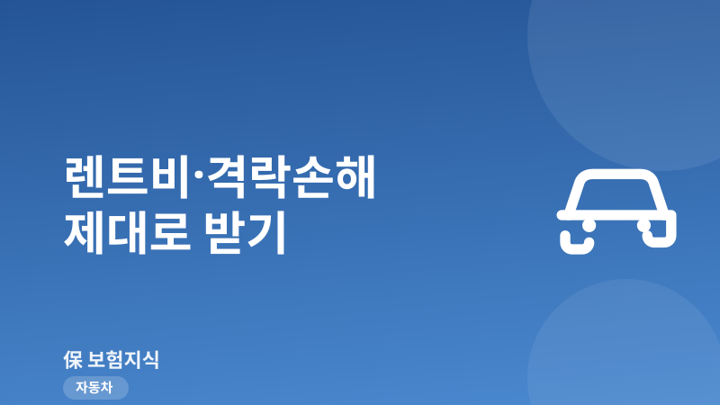
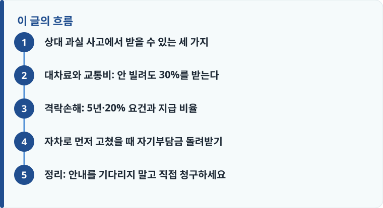

상대 과실 사고에서는 수리비 외에도 대차료(렌트비), 격락손해, 자차 처리 시 자기부담금까지 상대 보험사에 청구할 수 있습니다.
렌터카를 안 빌리면 인정 대차료의 30%를 교통비로, 격락손해는 출고 5년 이내·수리비가 차량가액의 20% 초과일 때 받습니다.
격락손해와 교통비는 자동 지급되지 않아 피해자가 직접 청구해야 하고, 거절되면 금융감독원 분쟁조정(1332)을 이용할 수 있습니다.
상대 과실 사고에서 받을 수 있는 세 가지
상대방 잘못으로 내 차가 파손되면 대부분 상대 보험사가 수리비를 처리해 줍니다. 그런데 수리비만 받고 사고를 마무리하면 실제로 받을 수 있는 돈의 상당 부분을 그냥 흘려보내게 됩니다. 상대 과실 사고에서 피해자가 청구할 수 있는 항목은 크게 세 가지입니다. 첫째는 수리하는 동안 이동 수단이 없어 생기는 손해를 메우는 대차료(렌트비) 또는 교통비, 둘째는 수리를 다 해도 사고 이력 때문에 중고 시세가 떨어지는 격락손해(자동차 시세하락손해), 셋째는 급해서 내 자차보험으로 먼저 고쳤을 때 낸 자기부담금을 상대에게 구상해 돌려받는 것입니다.
문제는 이 세 가지가 상대 보험사 입장에서는 굳이 먼저 안내할 이유가 없는 돈이라는 점입니다. 특히 격락손해와 교통비는 청구가 들어오지 않으면 자동으로 지급하지 않는 경우가 많아, 아는 사람만 챙겨 받습니다. 얼마를 받을 수 있는지는 결국 과실비율에 따라 결정되므로, 청구 전에 자동차 사고 과실비율이 어떻게 정해지는지부터 확인해 두면 협상에 훨씬 유리합니다.
대차료와 교통비: 안 빌려도 30%를 받는다
대차료는 내 차를 수리하는 동안 사고차와 동급·동종의 차량을 빌리는 렌트비를 말합니다. 표준약관은 파손된 차량과 배기량·연식이 비슷한 동급 차량 기준으로 렌트비를 인정하며, 상대 과실비율만큼 지급합니다. 여기서 많은 사람이 모르는 부분이 있습니다. 렌터카를 실제로 빌리지 않고 대중교통이나 자기 차로 버텨도, 인정되는 대차료의 30%를 교통비 명목으로 받을 수 있습니다. 렌트 비용이 부담스러워 안 빌린 사람일수록 이 30% 교통비를 반드시 챙겨야 합니다.
인정 기간은 무한정이 아니라 '통상의 수리기간'까지입니다. 부품 수급과 정비에 실제로 걸리는 기간을 기준으로 하며, 약관상 최대 25일에서 30일 범위 안에서 인정됩니다. 견인이나 부품 대기로 수리가 늦어지면 정비소의 입고·출고 기록과 부품 대기 확인서를 받아 두어야 기간을 온전히 인정받기 쉽습니다. 참고로 대차료·교통비는 상대 대물배상에서 나가는 항목이므로, 상대의 대물배상 적정 한도가 낮으면 고가 차량 사고에서 한도가 쟁점이 될 수 있다는 점도 알아 두면 좋습니다. 대차료를 받으려면 렌터카 계약서나 대중교통 이용 사실을 근거로 남겨 두는 편이 안전합니다.

격락손해: 5년·20% 요건과 지급 비율
격락손해는 사고차를 완벽히 수리해도 '사고 이력 차량'이라는 이유로 중고 시세가 떨어지는 손해를 말합니다. 눈에 보이지 않는 손해라 놓치기 쉽지만, 요건만 맞으면 정당하게 청구할 수 있는 항목입니다. 금융감독원 예규가 정한 인정 요건은 두 가지입니다. 차량이 출고 후 5년 이내여야 하고, 수리비가 사고 직전 차량가액의 20%를 초과해야 합니다. 예를 들어 차량가액이 2,000만 원인데 수리비가 400만 원을 넘으면 요건을 채웁니다.
지급 비율은 출고 후 경과 기간에 따라 나뉩니다. 출고 1년 이하면 수리비의 20%, 1년 초과 2년 이하면 15%, 2년 초과 5년 이하면 10%를 지급합니다. 원래 대상이 출고 2년 이내 차량이었지만 2019년 예규 개정으로 5년 이내까지 확대되어, 지금은 출고 3~5년 된 차도 요건을 채우면 받을 수 있습니다. 격락손해는 수리 견적이 아니라 실제 수리 완료 후 별도로 청구하는 항목이라는 점을 꼭 기억해야 합니다. 사고 후 보상 문제와 별개로 내 보험료가 어떻게 되는지는 사고 후 보험료 할증에서 따로 확인해 두면 전체 손익을 가늠하기 좋습니다. 다만 상대 과실 사고로 상대 대물에서 보상을 받는 경우에는 내 보험 사용이 아니므로 내 할증과는 직접 관련이 없다는 점도 함께 기억해 두세요.
작성·검수 기준
이 글은 특정 보험사나 상품을 권유하기 위한 것이 아니라, 상대 과실 교통사고에서 피해자가 놓치기 쉬운 대차료·격락손해·자기부담금 구상의 일반 기준을 설명하기 위해 작성했습니다. 대차료 인정 기간, 격락손해 지급 비율, 자기부담금 한도는 자동차보험 표준약관과 금융감독원 예규를 기준으로 정리한 것이며, 개별 사고의 과실비율·차량 상태·심사 결과에 따라 실제 지급액은 달라질 수 있습니다.
정확한 청구 가능 여부는 본인 사고의 사실관계와 상대 보험사 약관을 함께 확인해야 하며, 자차와 상대 배상의 관계가 헷갈린다면 운전자보험 vs 자동차보험의 차이부터 정리해 두는 것이 도움이 됩니다.
자차로 먼저 고쳤을 때 자기부담금 돌려받기
상대 과실이 명백해도 상대 보험사와 협의가 늦어지면 급한 마음에 내 자차보험으로 먼저 수리하는 경우가 많습니다. 이때 자차 처리에는 자기부담금이 붙습니다. 보통 수리비의 20%이며 최소 20만 원, 최대 50만 원 범위에서 내가 부담합니다. 하지만 상대 과실분에 대해서는 내 보험사가 상대 보험사에 구상을 청구하기 때문에, 구상이 마무리되면 그 자기부담금을 나중에 돌려받을 수 있습니다. 상대가 100% 과실이라면 아예 상대 대물로 처리하는 편이 유리한데, 이 경우에는 자기부담금 자체가 발생하지 않습니다. 예컨대 수리비가 250만 원이고 상대 과실이 70%라면, 자차로 먼저 처리할 때 자기부담금 50만 원을 내지만 상대 과실분에 대한 구상이 끝나면 그중 상당 부분을 되돌려받게 됩니다. 그래서 자차로 급히 고쳤더라도 구상 진행 상황과 자기부담금 반환 여부를 반드시 내 보험사에 확인해야 합니다. 아래 순서대로 챙기면 놓치는 돈을 줄일 수 있습니다.
- 사고 직후 상대 보험사에 접수하고 사고 접수번호를 확보합니다.
- 렌트비 또는 교통비(안 빌리면 대차료의 30%)를 사고 직후에 요청합니다.
- 수리 완료 후 수리내역서·차량등록증·견적서를 갖춰 격락손해를 별도 청구합니다.
- 자차로 먼저 고쳤다면 상대 과실분 구상으로 자기부담금 반환을 확인합니다.
- 거절당하면 서면 이유서를 요구하고 금융감독원 분쟁조정(1332)이나 소액사건 소송을 검토합니다.
정리: 안내를 기다리지 말고 직접 청구하세요
상대 과실 사고에서 수리비는 알아서 처리되지만, 대차료의 30% 교통비와 출고 5년 이내·수리비 20% 초과 요건을 채운 격락손해, 그리고 자차 처리 후 자기부담금 구상은 대부분 피해자가 직접 청구해야 받을 수 있는 돈입니다. 사고 접수번호를 확보하고, 렌트·교통비는 사고 직후에, 격락손해는 수리 완료 후에 서류를 갖춰 청구하면 됩니다. 거절당해도 끝이 아니라, 이유서를 요구하고 1332 분쟁조정을 활용할 수 있다는 점을 기억하세요.
다른 보험 정보 글이 궁금하다면 보험지식 블로그에서 이어 읽어 보세요. 가입 전에는 반드시 약관과 상품설명서를 확인하는 것이 가장 안전한 방법입니다.